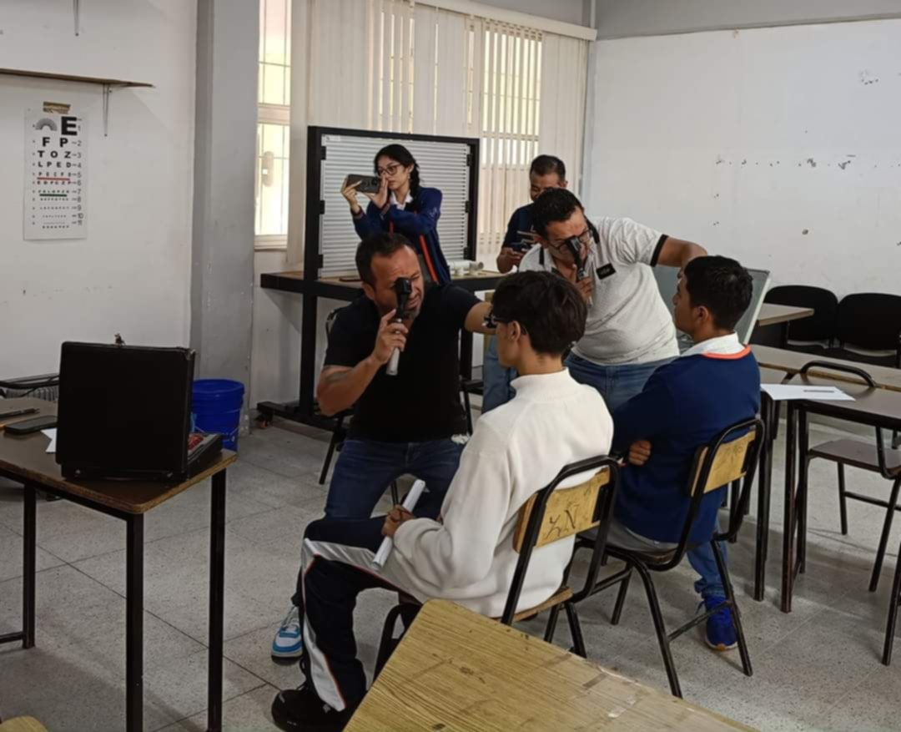
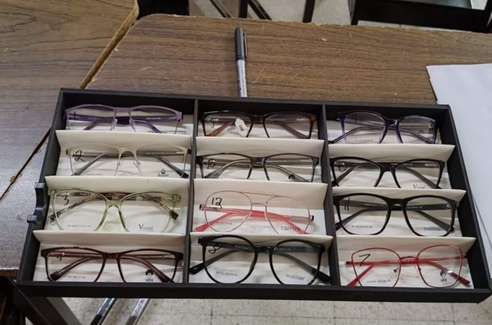
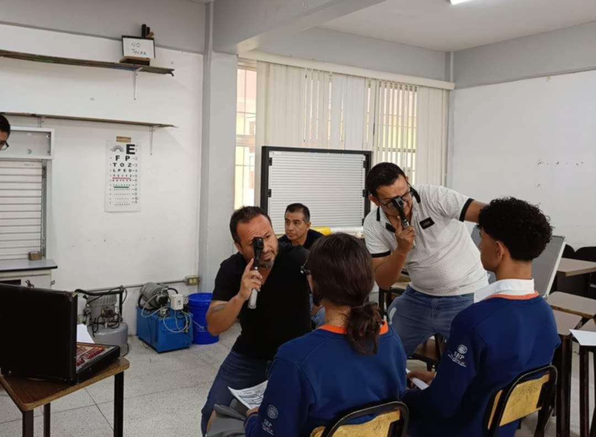

Pasos del Procedimiento
- 1. Se pidió permiso para habilitar este proyecto con docentes y padres de familia.
- 2. Se mandó un formulario y listado a los alumnos sobre lo que se necesitaba para la participación.
- 3. Se llevó a cabo el examen, aproximadamente 3 minutos por persona.
- 4. Se realizó un estudio socioeconómico para determinar si el alumno contaba con los recursos necesarios para regalar o aportar una parte del dinero para el apoyo.
- 5. Se obtienen los resultados y se inicia con la fabricación de los lentes.
- 6. Entrega de los lentes en una ceremonia.
Pruebas sobre el proyecto


